mBlagajna
A mobile point-of-sale for port authority officers collecting marine fees berth-side.
Summary
Port authority officers collect a wide range of marine fees — mooring, dry berth, waste collection, water/electricity, towing, national park entry tickets — directly at the berth instead of sending skippers to a fixed cash desk. Pricing depends on vessel length, which varies by service and by length band. This app works out the correct price automatically, based on one number, instead of leaving that calculation to the officer.
The problem
Pricing for marine fees isn't a flat rate — it depends on vessel length. Mooring, national park tickets, and other services each apply differently depending on how long the vessel is, so before an officer can charge the right price, they first need to know the vessel's length and which pricing band it falls into. Working that out by hand, for every transaction, at the berth, is slow and easy to get wrong.
The officer identifies a vessel first — and only then does the system reveal which services apply and at what price. The officer chooses a service, never a tariff.
Users & constraints
- Primary user — port officer working at the berth
- Environment — outdoors, direct sunlight, wind, sea spray
- Load — dozens of transactions per shift in peak season
- Constraints — one-handed use, unreliable mobile coverage
These constraints drove nearly every interface decision: large touch targets, high-contrast surfaces for outdoor legibility, primary actions anchored in the thumb zone above the Android system navigation bar, and a design that assumes offline is the normal condition, not an error state.
Design system
The visual language went through several iterations before landing on something that felt right for a single-purpose industrial device rather than a generic consumer app: a light, high-contrast working surface — rather than a dark "hero" theme that looks good in a pitch deck but is hard to read in direct sun — one confident accent colour reserved for primary actions, and plain system typography for maximum legibility rather than a decorative display font. Green and amber are reserved strictly for status semantics (synced/online vs. offline/pending) so they never compete visually with the primary action colour.
Every screen shares the same chrome: an Android status bar, a system navigation bar, and a consistent app-bar pattern (back arrow, title, overflow menu where relevant) — so the interface behaves the way the underlying device already behaves, rather than fighting the platform.
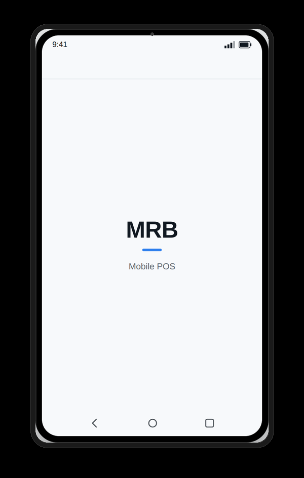
Splash screen
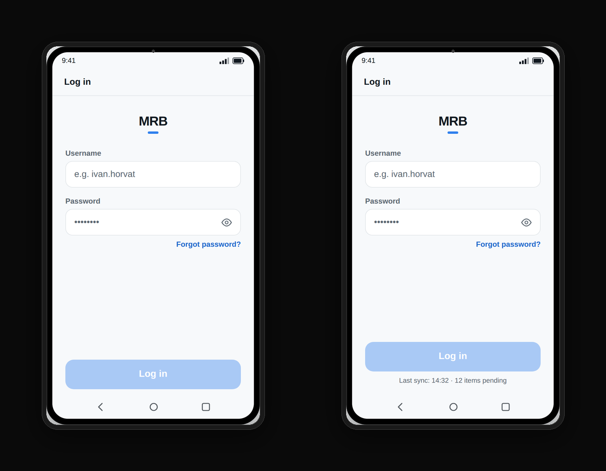
Login — normal and offline state
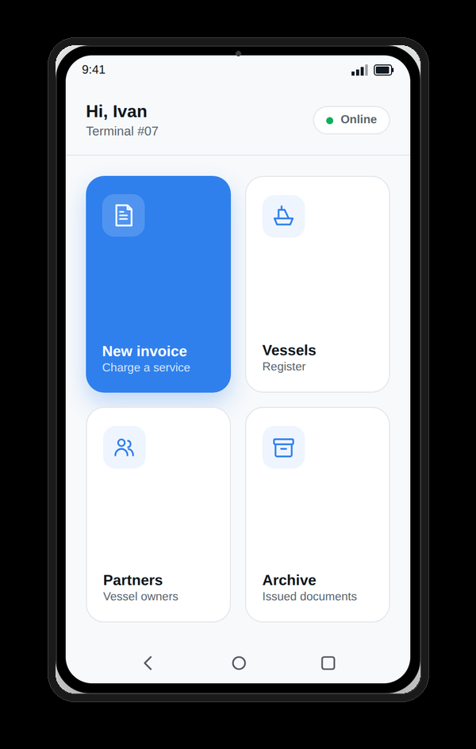
"New invoice" promoted first
Starting a new invoice
Creating a new invoice starts with a list of vessels — registered ones the officer has served before, plus two general options for unregistered vessels. Picking a registered vessel goes straight to service selection, since its length is already on file. Picking a general vessel stops first at a length entry screen — that number is what unlocks the correct services and prices on the next screen.
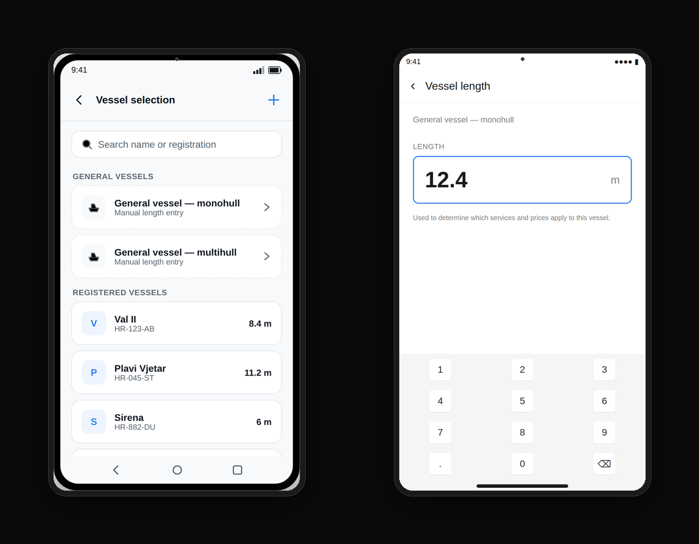
Vessel selection, length entry
The core screen
Once a length is known, only the tariffs that apply to that length band are offered. Categories sit in a grid that's fully visible without scrolling — even as the real tariff catalogue grows — and tapping one filters straight to its articles. Real ERP article codes (e.g. Berthing fee — M18, Berthing fee cancellation — M17) are used throughout rather than placeholder labels, so the prototype reads as the actual system rather than a mock-up.
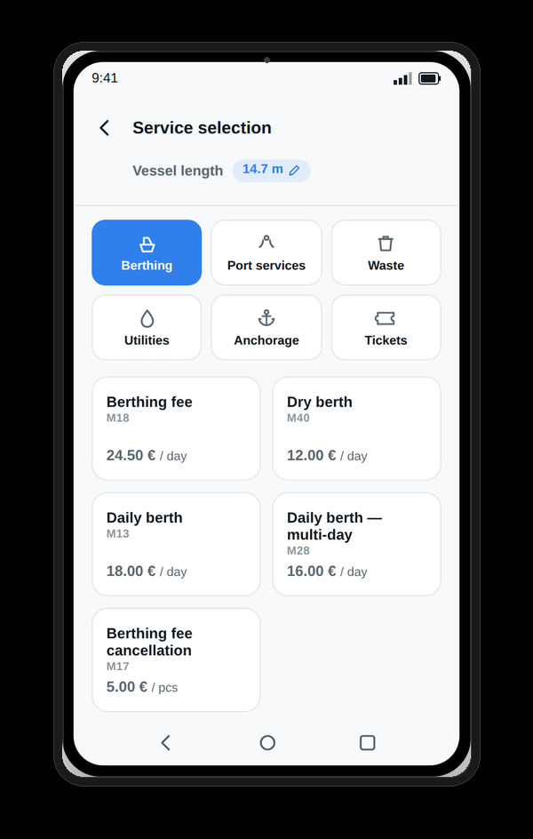
Tariffs filtered by length
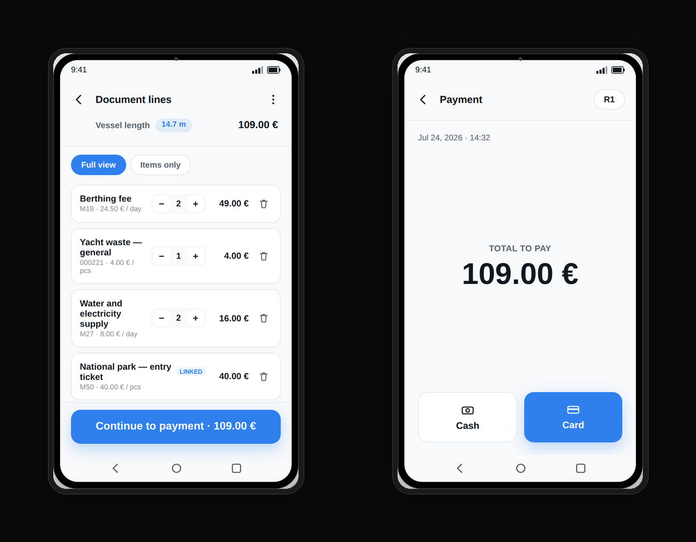
Receipt lines & payment
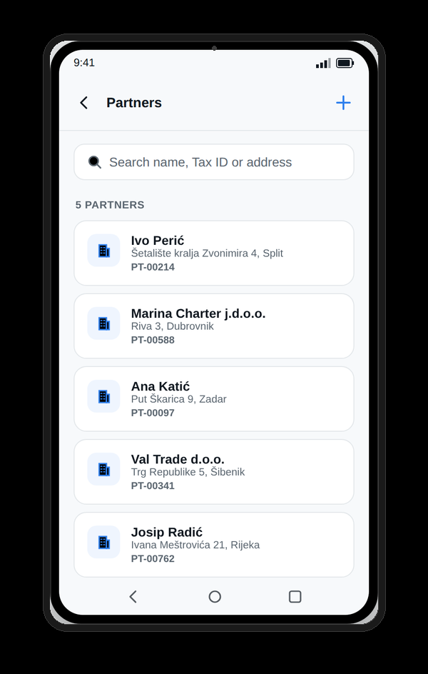
Partners register
R1 invoice — partner lookup
Tax ID is the lookup key. A match auto-fills the buyer's details; no match offers a direct path to register a new partner on the spot, which then syncs back to the ERP.
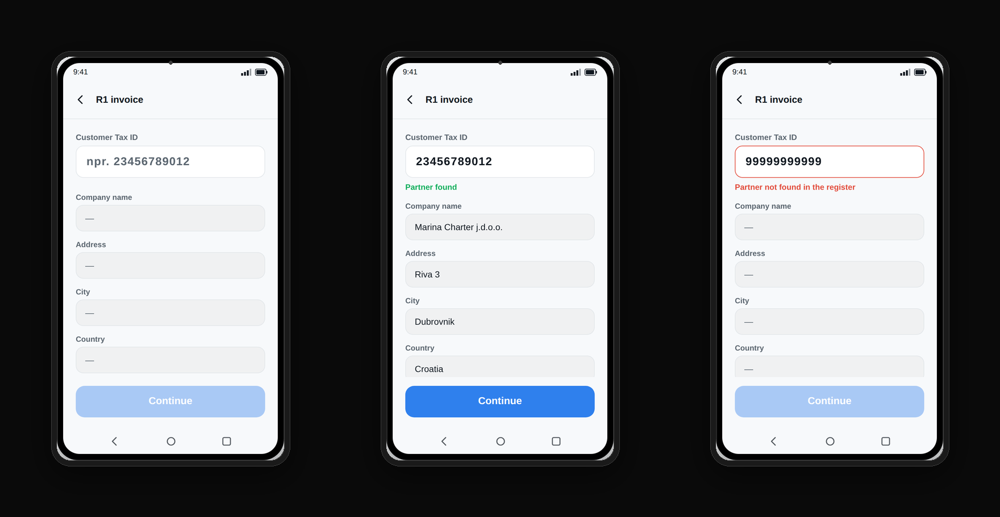
Three lookup states
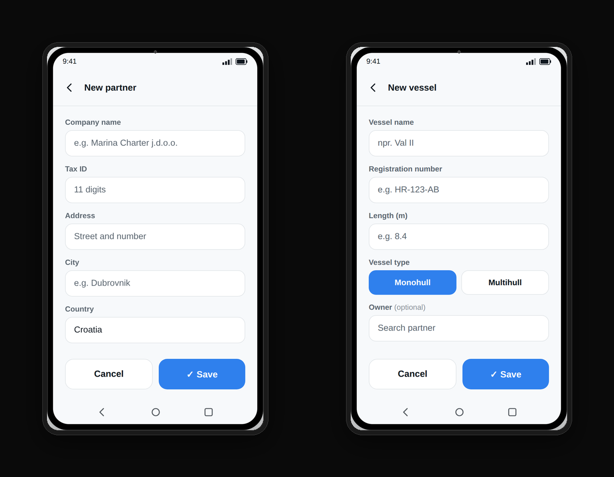
New partner & vessel forms
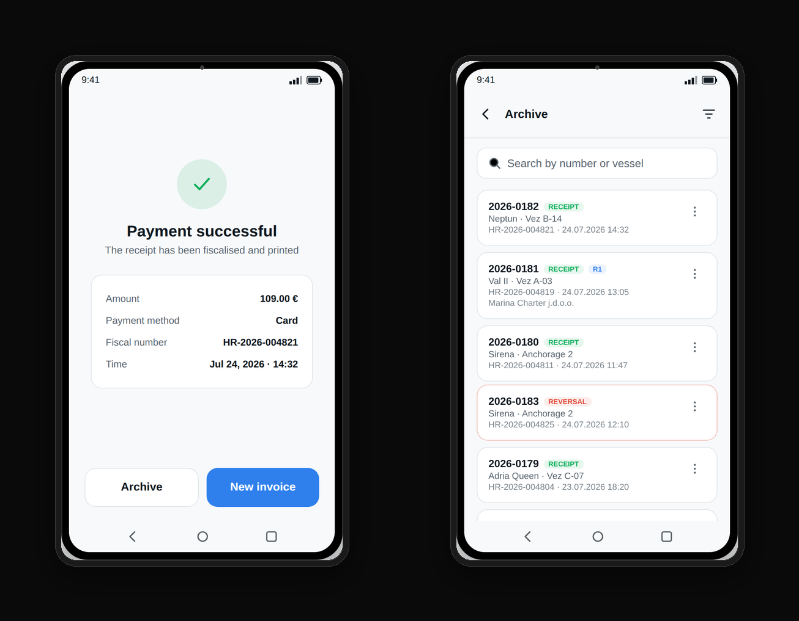
Confirmation & archive
Credit note (storno)
Reversing a document is treated with the weight it deserves: an explicit confirmation step, and — for card payments — a hard requirement that the customer's physical card be presented again before the refund can complete.
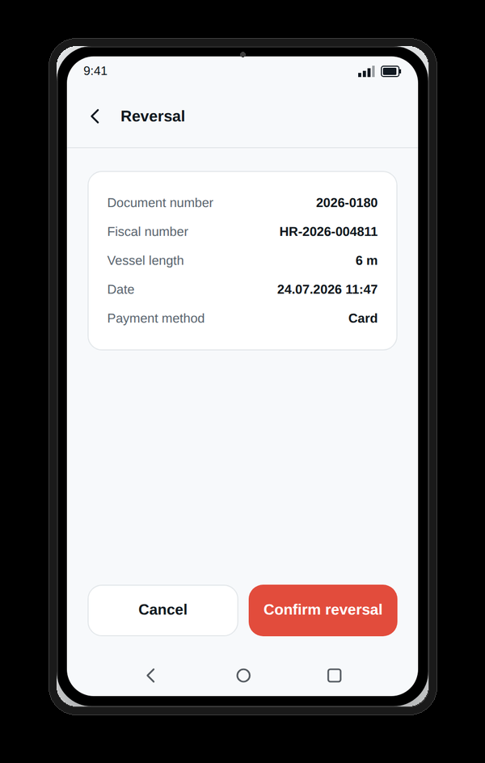
Storno confirmation
Key business rules encoded in the interface
- Vessel length is the single key that unlocks pricing — the officer never picks a tariff band manually
- A vessel can be identified from the register or as a general vessel with a manually entered length, validated against implausible values
- Linked articles are added automatically and can't be removed independently of their parent line
- A payment method is mandatory before a document can be completed
- Every document is fiscalised; if fiscalisation fails, the document is retried, never lost
- Documents are never deleted — a reversal always creates a new, linked document, and the original remains visible
- Card refunds require the physical card to be re-presented
- Every core function works fully offline; synchronisation happens in the background or on demand, never as a blocker
Outcome
An officer can now serve one vessel after another without breaking stride — pick it from the list, choose a service, take payment, done. Getting the price right is no longer something they have to stop and work out.